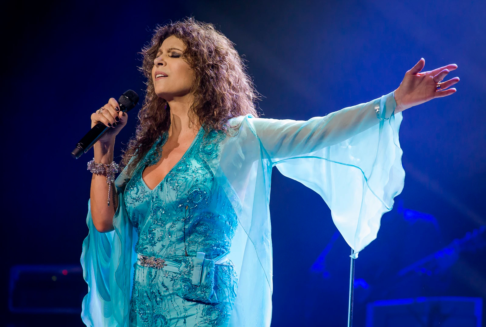

Patricia Sosa
Patricia Elena Sosa es una cantante, autora y actriz argentina con influencias de rock, soul, blues y melódico.
Por Alejandrina Ulloa
Nació el 23 de enero de 1956, en Barracas, Buenos Aires. A los cuatro años cantaba en el Coro del Sagrado Corazón de Jesús, y tocaba la guitarra. Estudió comedia musical, baile, teatro, guitarra, violin, piano y corte y confección antes de cumplir 15 años. A los 16 años conoció a Oscar Mediavilla, con quien se casó en 1983. Comenzó estudiando arquitectura en la Universidad de Buenos Aires, la cual abandonó en cuarto año y se recibió como maestra de inglés.
COMIENZOS
EN LA
MÚSICA
La primera banda en la cual cantó fue el "Grupo Vocal Azurduy", en su colegio secundario, pero fue recién en 1974 cuando formó el grupo Nomady Soul, donde cantaba y grababa covers en inglés. Seis años más tarde, en 1980 se unió a La Torre, siendo una de las primeras mujeres argentinas en liderar una banda de rock and roll. En 1982 fue revelación en el BARock’82. Convirtiéndose en una artista popular. En 1988 hizo dos extensas giras por la entonces Unión Soviética con más de 90 shows a sala llena. Ese mismo año nació su única hija, Marta Avelina y tiempo después Patricia abandonó la banda para largarse como solista al año siguiente.En 1992 alcanzó un éxito masivo con la salida de “Endúlzame los oídos”, y en 1994 aún más con “Aprender a Volar”, que hoy en día es considerado un himno en su carrera. En el año 1996 se divorció de Oscar, y dejó de cantar durante esos cuatro años que estuvieron separados. A comienzos del 2000 volvieron a elegirse y hoy en día son novios.
"Sé que me iré y volveré cada vez que mi alma me lo pida. Soy lo que soy porque fui lo que fui. Soy mi pasado y mi alma. Soy mi voz y mi poesía".
Patricia Sosa
"Sé que me iré y volveré cada vez que mi alma me lo pida. Soy lo que soy porque fui lo que fui. Soy mi pasado y mi alma. Soy mi voz y mi poesía".
Patricia Sosa
OTRAS
FACETAS
ARTÍSTICAS
Fue actriz protagónica en Ningún Amor es Perfecto, junto a Diego Olivera. También participó en Chiquititas, Otro Corazón, Papá por un día, RRDT, Poliladron, entre otros. Fue jurado en programas de televisión como “Cantando por un sueño”, “Soñando por cantar”, “Tu cara me suena” y “Laten Argentinos”. Es la autora de canciones de musicales infantiles como “Peter Pan, todos podemos volar” y “Aladín, será genial”. Escribió los libros “Código de Barrio” y “Cuento con Vos”. Desde 2008 preside la fundación “Pequeños Gestos, Grandes Logros”, ayudando a la comunidad Toba en el Imprenetrable chaqueño. Es la creadora y directora de “El Templo de la Voz”, su escuela de canto, actuación y meditación. El 12 de diciembre de 2014 interpretó la Misa Criolla de Ariel Ramírez en la Capilla Sixtina, en la Ciudad del Vaticano, en los festejos por el día de la Virgen de Guadalupe. En 2016 fue convocada para cantar en el World Culture Festival, un multitudonario festival por la Paz y la diversidad cultural, en Nueva Delhi, India.
EN LA
ACTUALIDAD
En 2017 grabó un disco con el pianista y compositor cubano Chucho Valdés, el cual presentaron este año en el Gran Teatro de La Habana Alicia Alonso, y luego realizaron una gira extensa por el país y por el exterior. Además de presentarse en varias provincias del país con su gira "Señales", es parte del trío folclórico “Agitando Pañuelos”, junto a Juan Carlos Baglietto y Lito Vitale. También se encuentra en la grabación de su próximo disco que saldrá a principios del año que viene el cual contará con un amplio repertorio de baladas románticas y rock.